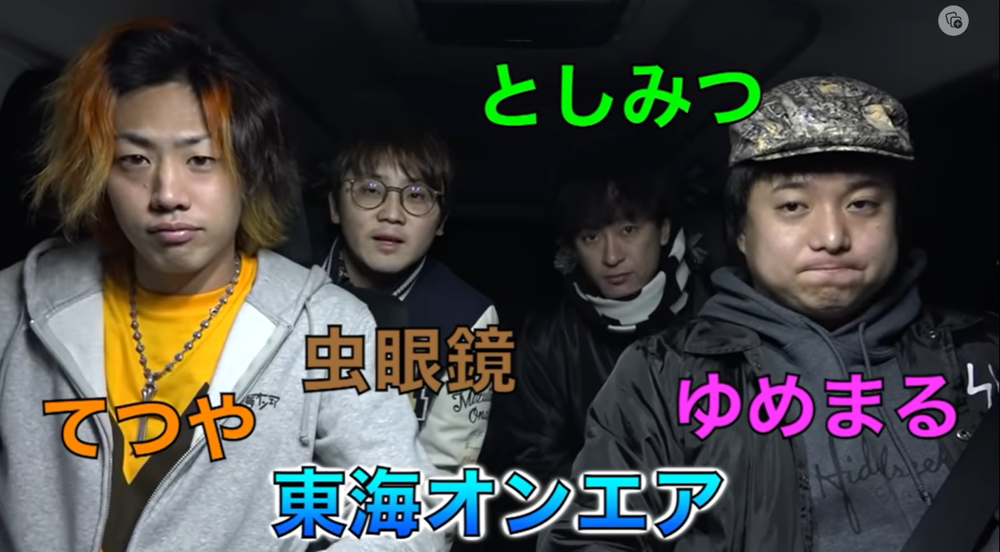

「HTML & CSS 初級」の勉強内容まとめ(製作中)
hは見出し,pは段落(見出し以外に使う),aはリンク(下記参照,href=""で指定),例えば
たぬたぬの好きなYouTubeチャンネルランキング！
- 東海オンエア
- えみ姉
- 両学長 リベラルアーツ大学
理由：おもしろい
理由：あまんが好きだから
理由：おもしろい↑あまんは絶対クリックしろ！！！
↑クリックするとYouTubeチャンネルに飛べるぞい！！
ul(ol)とliの組み合わせで箇条書きを表現できる(list-style:none;にすると点or数字を消せる)
CSSではfont-size,font-family(スペースがあるものはダブルクオーテーションで囲む),color,background-color, width, height,float,padding,marginを指定できる
htmlの中にhead(文字コード指定,ページタイトル設定,CSSの読み込み)とbodyがある
aやspanはインライン要素(改行が入らない).文中の特定の文字列をspanで囲み,色を指定することが出来る
border-bottom:2px solid #dee7ec;とすることでボーダーをつけることが出来る
input(typeとvalue)とtextareaについて
input要素(まだ何も起きない)
textarea要素(まだ何も起きない,文字が打てるだけ)